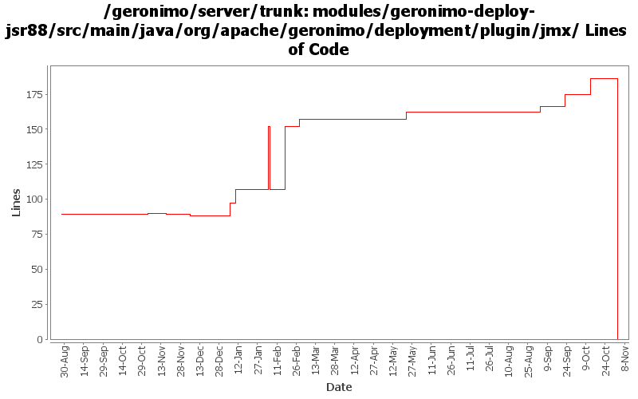

[root]/modules/geronimo-deploy-jsr88/src/main/java/org/apache/geronimo/deployment/plugin/jmx

| Author | Changes | Lines of Code | Lines per Change |
|---|---|---|---|
| Totals | 37 (100.0%) | 376 (100.0%) | 10.1 |
| djencks | 9 (24.3%) | 175 (46.5%) | 19.4 |
| gdamour | 9 (24.3%) | 162 (43.1%) | 18.0 |
| pmcmahan | 2 (5.4%) | 21 (5.6%) | 10.5 |
| kevan | 6 (16.2%) | 6 (1.6%) | 1.0 |
| jlaskowski | 1 (2.7%) | 6 (1.6%) | 6.0 |
| dwoods | 1 (2.7%) | 5 (1.3%) | 5.0 |
| vamsic007 | 1 (2.7%) | 1 (0.3%) | 1.0 |
| prasad | 4 (10.8%) | 0 (0.0%) | 0.0 |
| jdillon | 4 (10.8%) | 0 (0.0%) | 0.0 |
GERONIMO-3565. Modules distributed amongst framework/modules and plugins
0 lines of code changed in 4 files:
GERONIMO-3496 reenable prerequisite check for plugin installation, but make the check optional via
a separate method.
11 lines of code changed in 1 file:
GERONIMO-3413 promote the verifyPlugin method to the PluginInstaller interface so that the
PluginInstallerGBean can be used to determine if plugins are installable.
10 lines of code changed in 1 file:
GERONIMO-3330 GERONIMO-3453 Use the new plugin schema Paul came up with. Use jaxb for geronimo-plugin xml handling. Modify the car-maven-plugin to generate geronimo-plugin.xml and explicitly specify the dependencies for the plan in pom.xml. This introduces several more jaxb libraries in lib which I hope can be removed again. Also the console plugin handling is barely working.
97 lines of code changed in 1 file:
GERONIMO-3350 get rid of questionable getURLFor method
1 lines of code changed in 1 file:
GERONIMO-3183 Fix offline deployment in minimal configurations. Applied the second-half of the patch, which adds some improved diagnostics. Offline deployment still fails in the minimal assemblies....
5 lines of code changed in 1 file:
GERONIMO-2904 add impl of new jsr-88 method
16 lines of code changed in 2 files:
Second attempt to change the way the online/offline deployers and the JSR88
deployment driver work. The first attempt was breaking the TCK amd the
eclipse plugin.
Online deployer, i.e. deployer.jar, boots a Kernel to load its dependencies,
e.g. geronimo-deploy-tool, and registers the available ModuleConfigurers with
the DeploymentManager.
ModuleConfigurers to be registered are loaded by the persistent configuration
list jsr88-configurer-config.xml.
In the case of an offline deployment, the online deployer starts the
offline-deployer configuration within the same Kernel. In turn, the
offline-deployer configuration starts a list of configurations to register
the available module builders.
Add a log4j configuration for the online deployer.
DeploymentFactoryBootstrapper is the new JSR88 deployment driver. It boots a
kernel; starts the configuration list jsr88-configurer-config.xml; retrieves
the "actual" DeploymentFactory implementation from the kernel; and delegates
to this retrieved imoplementation.
The JSR88 JAR driver is now named jsr88-deploymentfactory.jar.
This fixes:
* GERONIMO-2794 - Improve online deployer to register ModuleConfigurers from the repository; and
* GERONIMO-2767 - Minimize side effects of the offline deployer
69 lines of code changed in 3 files:
Revert deployer changes as they do break the Eclipse plugin and TCK.
I will investigate offline.
svn merge -r503370:503369 .
24 lines of code changed in 3 files:
Online deployer, i.e. deployer.jar, boots a Kernel to load its dependencies,
e.g. geronimo-deploy-tool, and registers the available ModuleConfigurers with
the DeploymentManager.
ModuleConfigurers to be registered are loaded by the persistent configuration
list jsr88-configurer-config.xml.
In the case of an offline deployment, the online deployer starts the
offline-deployer configuration within the same Kernel. In turn, the
offline-deployer configuration starts a list of configurations to register
the available module builders.
Add a log4j configuration for the online deployer.
This fixes:
* GERONIMO-2794 - Improve online deployer to register ModuleConfigurers from the repository; and
* GERONIMO-2767 - Minimize side effects of the offline deployer
69 lines of code changed in 3 files:
GERONIMO-2686 Fix some more problems with trying to use the deployer jar, the ModuleConfigurers are not available remotely
22 lines of code changed in 2 files:
GERONIMO-2686 Implement registration for ModuleConfigurers. Requires openejb changes also which will take a while to locate and commit
32 lines of code changed in 1 file:
GERONIMO-2627 clean up the jsr88 classpath problems a little bit
6 lines of code changed in 1 file:
GERONIMO-1657 CommandSupport doesn't bubble up the exception. Prints stacktrace
o Merging rev 482740 from branches\1.2
o Modified the patch submitted by Prasad Kashyap to account for the code changes post submission.
o Removed printStackTrace and the exception is passed on to the caller
1 lines of code changed in 1 file:
GERONIMO-2537 Update the src headers in server/trunk/modules to be compliant with the new ASF src header and copyright policy (http://www.apache.org/legal/src-headers.html). I also did some cleanup of the src headers and tried to make them all a consistent format
6 lines of code changed in 6 files:
Partial fix for GERONIMO-2537 All Geronimo source files must be brought in line with the new ASF source header and copyright notice policy
The modules directory is supposed to be migrated. There're some issues with some files, but they'll be handled manually
6 lines of code changed in 1 file:
GERONIMO-2441 some additional changes org.openejb>> org.apache.openejb
1 lines of code changed in 1 file:
Use logging instead of System.out and printStackTrace
0 lines of code changed in 4 files: